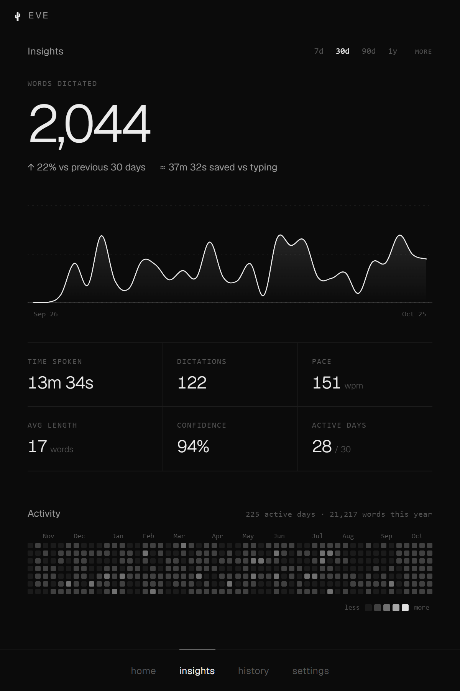
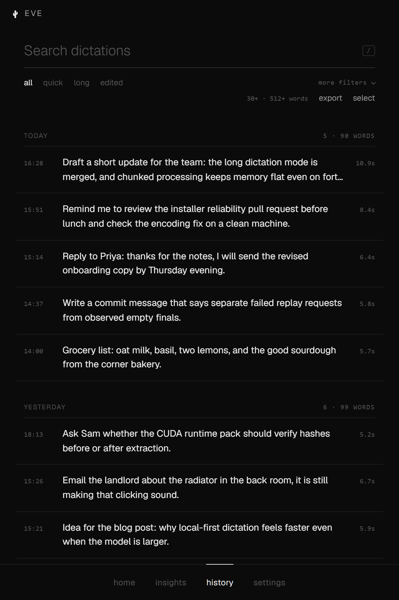
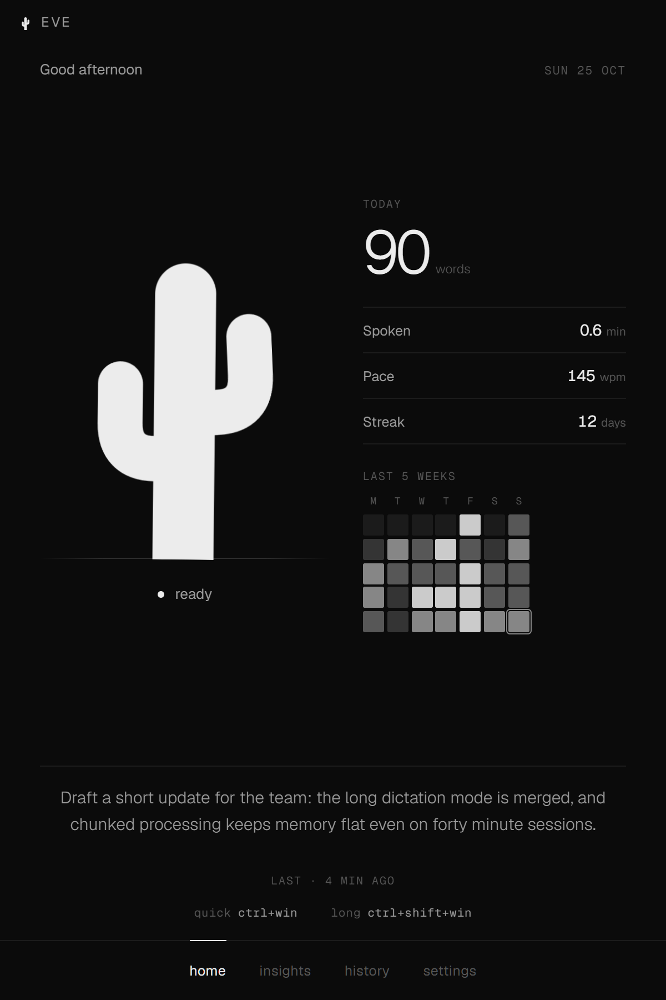

01
Talk for as long as you need.
Long recordings spool to a temporary file and are transcribed in chunks, so memory stays flat. The audio is deleted when the session ends.
Hold a hotkey, say what you mean, and the words land wherever you were typing. Speech recognition runs on your own machine. No account, no cloud.
01 · the pill
A small pill rises from the bottom of the screen while you talk, shows the words as they arrive, and slips away once the text is pasted. No window to switch to.
02 · the app



03 · insights
21,217
words dictated
225
active days
151 wpm
speaking pace
Illustration with demo data. Your numbers stay in a SQLite file on your machine.
04 · what it does
01
Long recordings spool to a temporary file and are transcribed in chunks, so memory stays flat. The audio is deleted when the session ends.
02
Eve copies, pastes into the active window, and can put your previous clipboard back afterwards.
03
Keep exactly what you said, or use Clean Prompt, Codex Prompt, Message Rewrite, or Command Mode for local, rule-based cleanup.
04
Hotwords help Eve spell names, acronyms, and product terms the way you do.
05
large-v3-turbo by default, large-v3 for maximum accuracy, or small for lighter hardware. Switching never interrupts the current model.
06
Works out of the box on the CPU. An optional NVIDIA CUDA pack, verified by hash, speeds things up on supported GPUs.
05 · privacy
06 · install
Eve.Web.Setup.<version>.exe from GitHub Releases.
The small web installer fetches the app, so stay online. It's unsigned for now, so SmartScreen may ask you to confirm.
Hold ctrlwin and talk. The speech model downloads the first time.